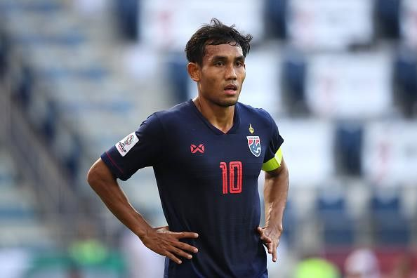

Vì sao Thái Lan loại hai tiền đạo “khủng” ở trận gặp tuyển Việt Nam?
(Dân trí) - Việc Akira Nishino loại cả hai tiền đạo Teerasil Dangda và Adisak Kraisorn ở trận gặp đội tuyển Việt Nam khiến cho nhiều người ngỡ ngàng. Vậy nguyên nhân từ đâu?